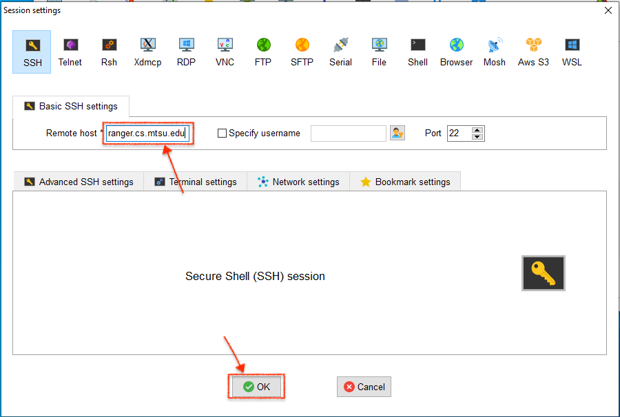

CSCI 3080 - Discrete Structures
OLA 0 - Customization of your ranger course account
Note: This lab is for Microsoft Windows Users
BACKGROUND:
The computer system you will use in CSCI 3080 for programming
is named ranger.
(Actually, ranger is an umbrella name for several actual machines,
such as ranger0 or ranger1. Because it doesn't matter which
particular ranger machine you are using, we'll just say ranger.)
Ranger runs the UNIX operating system,
an extremely powerful and popular system.
There are different "dialects" of UNIX,
such as Mac OS X or HP-UX.
The UNIX dialect running on ranger is called Linux.
Unlike a small personal computer that you physically handle to use,
ranger is a server that we will use via a network connection.
In CSCI 3080 each user is given an account, uniquely identified by
a C-number, that will be used when connecting to ranger.
Your work will be done while logged in to that course account.
Because your files are stored under your
course account on ranger, it doesn't matter where you are or
what computer you're using to connect to ranger, your files
will always be available to you.
In this lab,
you will do a one-time customization of your course computer account
to get it ready for the rest of the semester.
DIRECTIONS: Follow the instructions and
perform the actions indicated as they appear in the text.
To do this lab, you will first need to have been given your
C-number (and corresponding password)
by your course instructor.
After unzipping the downloaded file you will have an executable .exe file. Double click it.
Please skip Step 0 if MobaXterm is already installed on your computer.
Step 1: LOG IN USING MobaXterm
To connect to the ranger server from your personal Microsoft Windows computer, you will need to use a program known as a
MobaXterm
Locate the MobaXterm
icon on your mac.
Double-click the MobaXterm icon
to activate the app.
You will then see a window like the following. Please click the Session Icon in the uppser left corner to start a new Session.
You will see a window like the following after you click the Session Icon.
Then click the SSH Icon in the uppser left corner and press the OK button.
Now, you will see a window like the following. Please enter ranger.cs.mtsu.edu in the field of Remote host, please make sure the Port number is 22, then press OK button.

Then, you will see a log in window like the following:
Use your course account information to access ranger.
At the login as: prompt,
enter your course account's C-number
(that is, the 8 character login username you were assigned;
for example, c8294612).
When prompted for a Password:,
enter your course account's password; for example 74aB2w45.
Your password will not be displayed
so be careful in your typing;
hit the enter key when you are done typing the password.
NOTE:
UNIX is case-sensitive,
that is, it distinguishes between upper and lower case letters.
It is important to type the information exactly as indicated.
Then, you will get a pop up window, Do you want to save pasword for your c-number, please hit No button:
If you entered something wrong, you will get an error message:
Access denied
Keyboard-interactive authentication prompts from server:
Password:
If you typed the password wrong, you will be able to re-enter
the password information.
However if you entered the username (C-number) incorrectly
you must start over, you can close the Session by click the cross sign highlighted by the red rectangle.
If you are unsuccessful after several attempts,
check to be sure the Caps Lock key is not locked
on the keyboard. If it is, unlock it and try again.
Otherwise, ask the lab assistant for help.
Once you successfully login to the server, you will see something like:
Step 2: CUSTOMIZE YOUR ACCOUNT:
Much of UNIX is "command driven"; that's a fancy way of saying
that to get most things done, you type out command instructions
inside a Terminal window instead of clicking on icons.
(Another term for this is that you're using a CLI or
Command Line Interface.)
Recall that UNIX is case-sensitive and thus
distinguishes between upper and lower case letters.
It is important to type the commands exactly as indicated.
Failing to put in a space where required is an error; however
when a space is required, the amount of space (i.e., the number of blanks)
is usually not critical.
The Computer Science department has created software that will
customize your account so that it is suitable to use for this course.
The following customization should only be done once.
You will never need to customize this account again.
The general form of the customization command is as follows:
$
~cs/customize 3080
With your mouse,
click on the arrow next to "Select teacher's userid." and highlight
the appropriate userid (your lab instructor will tell you which one).
The command above should now have your teacher's userid on the end of the line.
In the MobaXterm Terminal window, at the $ prompt,
enter the customize line exactly as shown above.
(Do NOT enter the dollar sign as part of your
command. It is meant to represent the prompt provided by the system.)
As an example, if you have CSCI 3080
with Dr. Xin Yang
your entry would look like:
The customization will ask you for your first (personal/nickname)
name and last (family) name. Use mixed-case in entering your names;
for example, enter "John" and not "john" or "JOHN".
Next you will
be asked for your PipelineMT user name. (You will NOT be asked
for your PipelineMT password.)
Lastly you must enter the 3-digit course section number (001).
Please double check your 3-digit course section number before you enter.
If there are any errors, please review what you have done and
start over at step 1.
Otherwise, exit the terminal window by typing
exit.
Now you can open up a new Session Terminal window by clicking ranger.cs.mtsu.edu on the left panel. Please log in ranger with your C-number and password again.
Once log in successful, it should be similar to:
with CSCI 3080 Notices appearing (highlighted by red arrow)
and a prompt now of the form "ranger$" (Don't worry about which
ranger number is being displayed.)
If your screen has these items, everything is OK.
If not, please check with the instructor as to what might have gone wrong.
Next enter the following UNIX command:
$ handin
Because this is the first time you are using the
handin
command, you will get a message of the form:
NOTE: Please enter your course account's password when prompted.
(Use your instructor-supplied course account password.)
Authentication realm: <svn://svn.cs.mtsu.edu:3690> 076fc91e-5327-0410-80b2-9ad2079b72ac
Password for 'c*******':
Enter your course account password (the same one you used to log on to ranger)
as indicated.
Usually, your password will be obscured by a row of asterisks.
However on one of the ranger systems,
don't be alarmed that nothing seems to be being entered;
your password will not be shown on the screen as you type it,
not even as a row of asterisks. It is going in, however!
(You may also be asked if you'd like to
Store password unencrypted (yes/no)?;
if asked, answer
yes.)
This will be the only time you will need to provide
this information for handin;
the information is stored for future uses.
If successful, this handin
command will display a list of current valid assignment identification codes.
You can safely ignore what this list contains for the time being.
LOG OFF:
Once you are done, you will need to log off ranger
by entering
exit
at the command-line.
Congratulations! You have finished OLA 0.
https://www.cs.mtsu.edu/~xyang/3080/OLA/lab0_windows.html
(This lab is initially created by Dr. Roland Untch
, it is revised in Fall 2020 by Dr. Xin Yang)